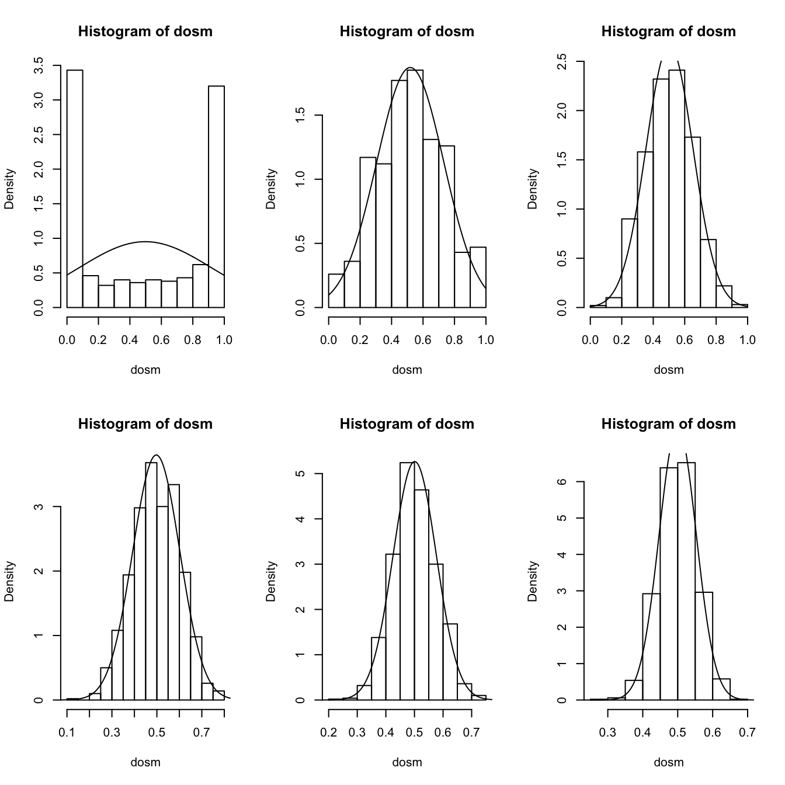
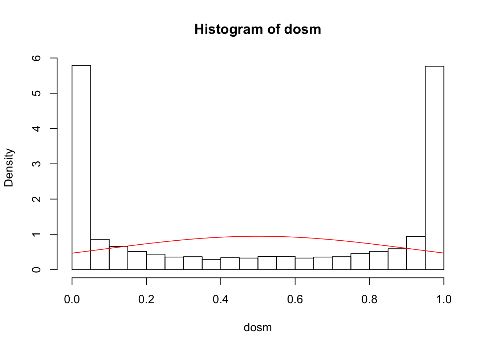

Chapter 5 Properties of random variables
library(tidyverse)
theme_set(theme_bw(base_size = 12) +
theme(strip.background = element_blank(),
panel.grid = element_blank())) 5.1 Expected values and the law of large numbers
5.1.1 Exercise set 5-1
On paper
samp.size <- 1
n.samps <- 1000
samps <- rnorm(samp.size * n.samps, mean = 0, sd = 1)
samp.mat <- matrix(samps, ncol = n.samps)
samp.means <- colMeans(samp.mat)
hist(samp.means)
samp.size <- 100
n.samps <- 1000
samps <-matrix(rexp(samp.size*n.samps, rate = 1), ncol = n.samps)
samp.means <- colMeans(samps)
hist(samp.means)
5.2 Variance and standard deviation
5.3 Joint distributions, covariance, and correlation
5.4 Conditional distribution, expectation, variance
5.5 The central limit theorem
5.5.1 Exercise set 5-4
- Bean machine in action!
library(animation)
nball <- 500 #change the number of balls
nlayer <- 10 #change the number of rows of pegs on the board
rate <- 10 #change the speed at which the balls fall
ani.options(nmax = nball + nlayer - 2, interval = 1/rate)
quincunx(balls = nball, layers = nlayer)- Exploring the beta distribution
To see what the beta distribution looks like for a given set of shape parameters, set the sample size to 1. For example:
will give you a histogram of 10,000 observations from a beta distribution with parameters 1 and 1. If you increase the sample size, then the distribution of the sample mean gets closer to normality. Try this — starting with samples of size 1 and increasing the sample size — with the following sets of parameter values: (1, 1), (0.2, 0.2), (2, 0.5), (0.5, 2), (3, 3). Feel free to try other parameter sets — it’s fun. What do you notice?
sims <- 1000
s1 <- 0.2 # change this
s2 <- 0.2 # change this
par(mfrow = c(2,3))
dosm.beta.hist(n = 1, nsim = sims, shape1 = s1, shape2 = s2)## mean of DOSM SD of DOSM var of DOSM
## 0.4884180 0.4233709 0.1792429## mean of DOSM SD of DOSM var of DOSM
## 0.50439769 0.20992249 0.04406745## mean of DOSM SD of DOSM var of DOSM
## 0.50906331 0.14961257 0.02238392## mean of DOSM SD of DOSM var of DOSM
## 0.4994362 0.1042027 0.0108582## mean of DOSM SD of DOSM var of DOSM
## 0.499661901 0.073121628 0.005346772
## mean of DOSM SD of DOSM var of DOSM
## 0.501353999 0.053045941 0.002813872Let’s deconstruct what is going on with this function, where n = 1 (we simulate 10000 observations from a single set of parameter values).
## function (n, nsim, shape1 = 1, shape2 = 1, ...)
## {
## samps <- rbeta(n * nsim, shape1, shape2)
## sim.mat <- matrix(samps, nrow = nsim)
## dosm <- rowMeans(sim.mat)
## hist(dosm, freq = FALSE, ...)
## x <- seq(0, 1, length.out = 1000)
## lines(x, dnorm(x, mean = mean(dosm), sd = sd(dosm)))
## c(`mean of DOSM` = mean(dosm), `SD of DOSM` = sd(dosm), `var of DOSM` = var(dosm))
## }
## <bytecode: 0x7fe67ff5f3f0>
## <environment: namespace:stfspack>nsim <- 10000
n <- 1
s1 <- 0.2 # change this
s2 <- 0.2 # change this
samps <- rbeta(n * nsim, shape1 = s1, shape2 = s2)
str(samps) # here are 10,000## num [1:10000] 0.9999 0.2447 0.0106 0.8416 0.0137 ...# We are converting the vector into a matrix
# So that we can easily calculate the mean of each row
sim.mat <- matrix(samps, nrow = nsim)
dim(sim.mat)## [1] 10000 1## [,1]
## [1,] 0.999899081
## [2,] 0.244689075
## [3,] 0.010648884
## [4,] 0.841629918
## [5,] 0.013737826
## [6,] 0.003054541# Calculate rowmeans - with n=1, this doesn't change anything
# But change n to anything bigger and inspect the dimensions of the objects
dosm <- rowMeans(sim.mat)
str(dosm)## num [1:10000] 0.9999 0.2447 0.0106 0.8416 0.0137 ...## [1] 0.999899081 0.244689075 0.010648884 0.841629918 0.013737826 0.003054541par(mfrow = c(1,1))
hist(dosm, freq = FALSE) # plotting the simulated values
# Set up a vector that goes from 0 to 1 to overlay a normal distribution on the histogram
x <- seq(0, 1, length.out = 1000)
# Now plot a normal distribution, using the mean and sd of the simulated values
lines(x, dnorm(x, mean = mean(dosm), sd = sd(dosm)), col = "red")
The Pareto distribution is a skewed, heavy-tailed, power-law distribution used in description of social, scientific, geophysical, actuarial, and many other types of observable phenomena. It was applied originally to the distribution of wealth in a society, fitting the observation that a large portion of wealth is held by a small fraction of the population. Named after the Italian civil engineer, economist, and sociologist Vilfredo Pareto.
Parameters of the rpareto function:
- a: shape (on the web as \(\alpha\))
- b: scale (on the web as \(x_m\))
If the shape parameter is \(\leq\) 1, \(E(X)\) is \(\infty\). If the shape parameter is \(\leq\) 2, \(Var(X)\) is \(\infty\).
First we simulate many sampes of size 1000 from a Pareto distribution with shape = 4.
# experiment with n and the parameters a and b
n <- 100
n_sims <- 10000
a <- 1
b <- 4
x <- rpareto(n = n, a = a, b = b)
summary(x)## Min. 1st Qu. Median Mean 3rd Qu. Max.
## 4.006 4.976 7.461 12.704 11.825 205.233# Calculate mean and sd
mu <- mean(x)
stdev <- sd(x)
hist(x, freq = FALSE)
# Set up a vector that goes from 0 to 1 to overlay a normal distribution on the histogram
x_vals <- seq(min(x), max(x), length.out = 1000)
# Now plot a normal distribution, using the mean and sd of the simulated values
lines(x_vals, dnorm(x_vals, mean = mu, sd = stdev), col = "red")
## function (x, k, mu, sigma)
## {
## mean(x < (mu - k * sigma) | x > (mu + k * sigma))/(1 - (pnorm(k) -
## pnorm(-k)))
## }
## <bytecode: 0x7fe685ad9578>
## <environment: namespace:stfspack>## [1] 0.4395579## Min. 1st Qu. Median Mean 3rd Qu. Max.
## 4.006 4.976 7.461 12.704 11.825 205.233## [1] 12.70401## [1] 21.92673# This gives the value of the mean, minus the value k*stdev
# (i.e., an extreme negative value)
# Below I will use my object stdev in place of sigma (the parameter from Edge's function)
(mu - k * stdev)## [1] -31.14946## [1] 56.55747# This statement asks whether the value in x is an extreme value
# The operator '|' is 'OR'
# Is x extreme negative OR extreme positive?
x < (mu - k * stdev) | x > (mu + k * stdev)## [1] FALSE FALSE FALSE FALSE FALSE FALSE FALSE FALSE FALSE FALSE FALSE FALSE
## [13] FALSE FALSE FALSE FALSE FALSE FALSE FALSE FALSE FALSE FALSE FALSE FALSE
## [25] FALSE FALSE FALSE FALSE FALSE FALSE FALSE FALSE FALSE FALSE FALSE FALSE
## [37] FALSE FALSE FALSE FALSE FALSE FALSE FALSE FALSE FALSE FALSE TRUE FALSE
## [49] FALSE FALSE FALSE FALSE FALSE FALSE FALSE FALSE FALSE FALSE FALSE FALSE
## [61] FALSE FALSE FALSE FALSE FALSE FALSE FALSE FALSE FALSE FALSE FALSE FALSE
## [73] FALSE FALSE FALSE FALSE FALSE FALSE FALSE FALSE FALSE FALSE FALSE FALSE
## [85] FALSE FALSE FALSE FALSE FALSE FALSE FALSE TRUE FALSE FALSE FALSE FALSE
## [97] FALSE FALSE FALSE FALSE# We can get the frequencies of this logical vector using table
table(x < (mu - k * stdev) | x > (mu + k * stdev))##
## FALSE TRUE
## 98 2# Or, as Edge, does, calculate the average of TRUEs - which is simply the proportion of TRUEs
mean(x < (mu - k * stdev) | x > (mu + k * stdev))## [1] 0.02# What proportion/probability of TRUEs would we expect under a normal probability distribution?
pnorm(k) # probability of observing a value less than k standard deviations above the mean## [1] 0.9772499## [1] 0.02275013## [1] 0.04550026# So putting it all together, we have the ratio of:
# the probability of observing an extreme value in the data, over the
# the probability of observing an extreme value in a normal distribution:
mean(x < (mu - k * stdev) | x > (mu + k * stdev))/(1 - (pnorm(k) - pnorm(-k)))## [1] 0.4395579## [1] 0.4395579# If this ratio is < 1, then the data have fewer extreme values than suggested by a normal
# If this ratio is > 1, then the data have more extreme values than suggested by a normalAbove, I haven’t computed the means of many simulations - which is the crux of the question! So here I just paste Edge’s solution. In it, he calculates \(E(X)\) and \(Var(X)\) using the Pareto probability distribution. I have changed n and n.sim to match my values above.
#Sample size per simulation (n) and number of simulations.
n <- 100
n.sim <- 10000
#Pareto parameters. Variance is finite, and so
#CLT applies, if a > 2. For large a, convergence to
#normal is better. With small a, convergence is slow,
#especially in the tails.
a <- 4
b <- 1
#Compute the expectation and variance of the distribution
#of the sample mean. a must be above 2 for these expressions
#to hold.
expec.par <- a*b/(a-1)
var.par <- a*b^2 / ((a-1)^2 * (a-2))
sd.mean <- sqrt(var.par / n)
#Simulate data
sim <- matrix(rpareto(n*n.sim, a, b), nrow = n.sim)
# Each column represents ith sample taken per simulation
# Each row represents a different simulation
sim[1:3, 1:10]## [,1] [,2] [,3] [,4] [,5] [,6] [,7] [,8]
## [1,] 1.091542 1.212704 1.122221 1.085845 1.076390 1.134369 1.200106 1.610465
## [2,] 1.830714 1.106657 1.732160 1.051676 1.024350 1.163516 1.166097 1.611679
## [3,] 1.543268 1.306341 1.780674 1.351779 1.283364 1.135167 1.216708 1.373239
## [,9] [,10]
## [1,] 1.039057 1.018510
## [2,] 1.110646 1.456685
## [3,] 1.016994 1.036580## num [1:10000] 1.34 1.33 1.33 1.3 1.28 ...#Draw a histogram of the sample means along with the approximate
#normal pdf that follows from the CLT.
hist(means.sim, prob = TRUE)
curve(dnorm(x, expec.par, sd.mean), add = TRUE, col = 'red')
## [1] 0.9700602## [1] 0.9558461## [1] 0.9296649## [1] 2.18535## [1] 20.52335## [1] 523.2834## [1] 0